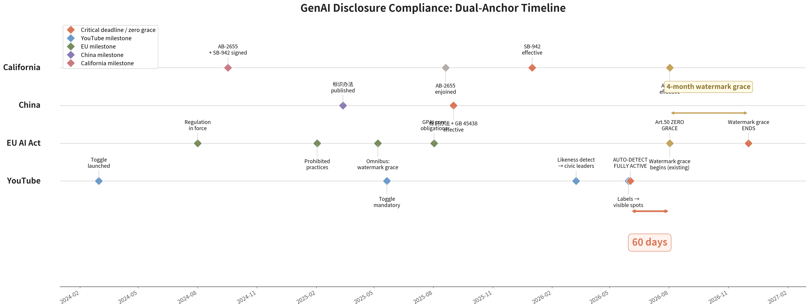
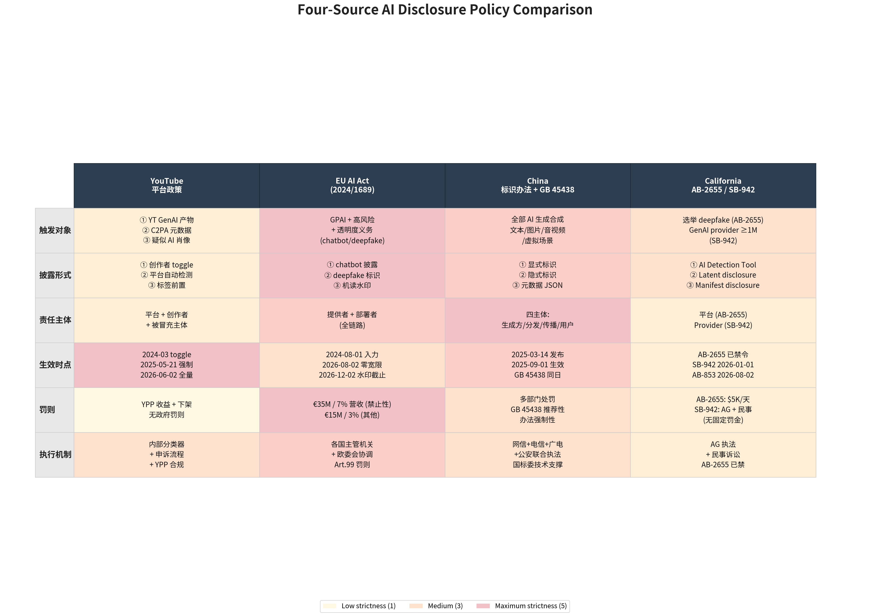

YouTube 2026-06-02 全量启动平台主动检测，距 EU AI Act 2026-08-02 Article 50 全面适用整整 60 天。这 60 天把全球 GenAI 治理的实际起算日，从立法日推到了平台落地日。
5 月 7 日的"AI Act Omnibus"协议被普遍解读为"延期"，实际只给了存量系统在机器可读水印一项上 4 个月宽限至 2026-12-02；chatbot 披露、deepfake 标签、通用型人工智能（GPAI）模型义务全部维持 8/2 零宽限。新系统上线即合规。罚则上限 3500 万欧元或全球营收 7%，高于 GDPR 的 4%。
本文从 AI 视频创作者第一视角，论证 YouTube 6/2 主动检测的本质是商业平台对 AI Act Art.50、中国《人工智能生成合成内容标识办法》传播平台核验义务、加州 SB-942 披露路径三大辖区合规公约数的提前对齐；GenAI 治理的实际起算日已从立法日切换到平台落地日。

| 日期 | 事件 | 来源 |
|---|---|---|
| 2025-09-01 | 中国《标识办法》+ GB 45438-2025 同步施行 | [5][6] |
| 2026-01-01 | 加州 SB-942 生效，罚则 $5,000/天/违规 | [7] |
| 2026-03-10 | YouTube 官方 blog 公告 likeness detection 扩展至公职人员、记者 | [8] |
| 2026-05-30 | PPC Land 披露 May 2026 disclosure 框架更新 | [9] |
| 2026-06-02 | YouTube 平台主动检测全量启动（事实锚） | [10] |
| 2026-08-02 | AI Act Art.50 / 99 全面适用（制度锚），AB-853 同日生效 | [1][2] |
| 2026-12-02 | AI Act 存量系统水印补齐截止（4 个月宽限唯一项） | [3] |
| 2027-12 | AI Act 高风险 AI 义务到期 | [3] |
我那条上周发的 AI 配音短片，被标了三次——前两次根本看不到。
YouTube 的 "Altered or synthetic content" 标签，显式 toggle 自 2024-03 上线、2025-05-21 强制执行；2026 年 5 月起前置到播放器与描述区"viewers will actually see"的位置。这层给观众看。
Content ID + C2PA（内容来源认证标准）元数据。用户看不见，但下游抓取工具——剪辑软件、二次分发平台、检测站点——都能机读出来。视频只要离开 YouTube，"AI 出身"已钉在文件里。6/2 之后被强化：YouTube 内部分类器现在主动检测三类触发源——自有 GenAI 工具产物（Veo、Fantasia Canvas 等）、携带 C2PA 元数据的外部内容、分类器命中的疑似肖像合成。
Article 50 要求的"经过常规处理不可去除"的机器可读水印，技术上还不成熟。Tech Fast Forward 直接挑明：
"Article 50 requires watermarks that are robust and not removable by normal processing; every current approach including SynthID and C2PA has documented failure modes under standard image operations."
Google 的 SynthID、行业联盟的 C2PA，截图、裁剪、转码、二次压缩之后都会失效——这些都是用户日常操作。
5 月 7 日的"AI Act Omnibus"协议被普遍解读为"延期"。实际只给了存量系统在机器可读水印一项上 4 个月宽限至 2026-12-02；chatbot 披露、deepfake 标签、GPAI 模型义务全部维持 8/2 零宽限。新系统上线即合规。
| 日期 | 义务 | 宽限 |
|---|---|---|
| 2026-08-02 | Chatbot 必须告知用户在跟 AI 交互 | 零 |
| 2026-08-02 | Deepfake 必须标注 | 零 |
| 2026-08-02 | GPAI 模型义务全面生效 | 零 |
| 2026-08-02 | 新系统的机器可读水印 | 零 |
| 2026-08-02 | 存量系统的机器可读水印 | 4 个月 |
| 2026-12-02 | 存量系统水印补齐截止 | 第二道大限 |
罚则上限 3500 万欧元或全球营收 7%——高于 GDPR 的 4%。

YouTube 6/2 上线的 detect + disclose + 主体申诉，恰好同时对齐三大辖区的合规公约数：
对创作者而言，路径只剩"标记 + 披露 + 工具"，"强删"已被堵死。
合规没有"应对一次"这种说法。8/2 之后紧跟着 12/2 存量系统补水印截止；加州 AB-853 同样卡在 8/2；欧盟成员国主管机关下半年陆续到位，第一批 Art.50 / 第 99 条典型化执法大概率在 8/2 之后几个月内出现。3500 万欧元或 7% 全球营收这把刀挂在那儿，是真要落下来的。
对创作者而言，三个判断要先做出来：
12/2/2026 第二道大限会再来一次。8/2 之后首批典型化执法落地时，会出现第一次"算法性裁判 vs 创作者举证"的拉锯。本文将以 v2 版本在 8/2 后复盘。
这篇文章写完存档的时候，我发现项目空间已经给文件头自动塞了一段 AI 生成内容标识的 frontmatter。我没勾任何选项。
这跟开头那条视频的情况一模一样——"我没点它，它自己出现了"。6/2 那天是 YouTube 替我打了标签，今天是我的写作工具替我盖了戳。标记这件事，已经不需要你同意了。